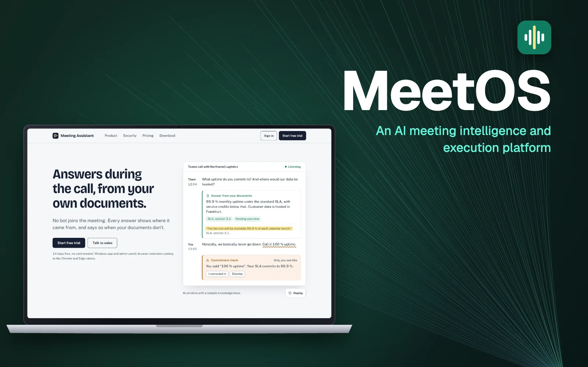

04 / Süni intellekt platformaları
MeetOS — Görüşləri real biznes nəticələrinə çevirən platforma
Google Meet, Zoom və Teams üçün Windows proqramı və brauzer əlavəsi: zəngləri transkripsiya edir və tərcümə edir, sonra qərarları məsul şəxsi və müddəti olan tapşırıqlara çevirir.

- 3platforma — Google Meet, Zoom, Teams
- 5görüş rejimi
- 2000+avtomatik test
01 / Ümumi baxış
MeetOS şirkətdaxili və müştərilərlə keçirilən görüşləri nəticəli edən süni intellekt platformasıdır. Brauzer əlavəsi və Windows proqramı Google Meet, Zoom və Microsoft Teams zənglərinə qoşulur; platforma onları transkripsiya və tərcümə edir, qərarları xülasə edir və görüşdən çıxan tapşırıqların icra olunmasına nəzarət edir.
02 / Problem
Şirkətlər saatlarını aydın nəticəsiz bitən görüşlərə sərf edir: razılaşmalar unudulur, tapşırıqların məsul şəxsi və müddəti olmur, bir həftə sonra isə əvvəlki görüşün qərarlarının icra olunub-olunmadığını heç kim yoxlamır.
03 / Yanaşmamız
MeetOS görüşün bütün dövrünü əhatə edir. Zəngdən əvvəl iştirakçılar və mövzu üzrə kontekst hazırlayır. Zəng zamanı brauzer əlavəsi və ya Windows proqramı — o, zəngin səsini və mikrofonu tutur, ona görə görüşə heç bir bot qoşulmur — çoxdilli transkripsiyaya ötürür; köməkçi sualları şirkətin öz sənədlərinə əsasən cavablandırır, hər cavabın mənbəyini göstərir və deyilən söz sənədlərə zidd olanda bunu yalnız sizə göstərərək xəbərdar edir. Görüşdən sonra qərarları və razılaşmaları xülasə edir, tapşırıqları çıxarır, məsul şəxsləri təyin edir və deadline, xatırlatma və follow-up proseslərini komandanın artıq istifadə etdiyi alətlərdə aparır.
04 / Nəticə
Platforma hazırdır — Windows proqramı, brauzer əlavəsi, server və idarə paneli tam qurulub — və 2000-dən çox avtomatik testdən keçir. ABŞ və Avropa olmaqla iki regionda işləyir və ilk pilot tərəfdaşlar üçün qəbul açıqdır. Ekosistemdə MeetOS qərarlarını RootOS-a ötürür.
05 / Əsas funksiyalar
Nə edir.
- 01
Hər zənglə işləyir
Google Meet, Zoom və Microsoft Teams — Windows, Mac, Linux və Chromebook-da brauzer əlavəsi ilə; Windows proqramı zəngin səsini və mikrofonu tutur. Mac üçün ayrıca proqram planlaşdırılır.
- 02
Çoxdilli transkripsiya
Zəngləri ingilis, ispan, fransız, alman, rus, ərəb və digər dillərdə transkripsiya edir; ABŞ regionunda Azərbaycan və türk dilləri də dəstəklənir.
- 03
Beş görüş rejimi
Satış zəngi, komanda görüşü, müştəri dəstəyi, müsahibə hazırlığı və söhbəti real vaxtda tərcümə edən canlı tərcüməçi.
- 04
Xülasə və qərarlar
Əsas müzakirələri, qərarları və razılaşmaları xülasə edir və onların məsul şəxs və vəziyyətlə jurnalını aparır.
- 05
Tapşırıqlar alətlərinizə
Tapşırıqları və xatırlatmaları Slack, Teams, Jira, Asana, webhook və Google və Microsoft təqvimlərinə göndərir; HubSpot və Salesforce pilotla aktivləşir.
- 06
Defolt olaraq məxfilik
Azərbaycan dilində şəxsi məlumatlar — FİN, IBAN və telefon nömrələri — avtomatik maskalanır.
06 / Arxitektura
Necə qurulub.
İki region
ABŞ və Avropa üçün ayrıca regionlar hər müştərinin məlumatını aid olduğu yerdə saxlayır; platforma Fly.io-da yerləşdirməyə hazırdır.
Regional süni intellekt steki
ABŞ-da Whisper və gpt-oss Groq üzərində işləyir; Avropada transkripsiyanı Deepgram Nova-3, analizi isə Azure OpenAI aparır.
Tam test olunub
2000-dən çox avtomatik test Windows proqramını, brauzer əlavəsini, serveri və idarə panelini əhatə edir.
07 / Texnologiya
Texnoloji stek.
- Backend
- .NET 10
- ASP.NET Core
- Klientlər
- Windows proqramı (WPF)
- Chrome və Edge əlavəsi
- İdarə paneli
- Məlumat və hostinq
- PostgreSQL
- ABŞ və Avropa regionları
- Fly.io
- Süni intellekt — ABŞ regionu
- Groq
- Whisper
- gpt-oss
- Süni intellekt — Avropa regionu
- Deepgram Nova-3
- Azure OpenAI
- İnteqrasiyalar
- Slack
- Microsoft Teams
- Jira
- Asana
- Webhook
- Google və Microsoft təqvimləri
- HubSpot və Salesforce (pilotla)
08 / Digər işlər
Oxşar layihələr.
«Süni intellekt platformaları» istiqamətində və ona yaxın digər işlərimiz.
Oxşar ideyanız
var?
Gəlin onu reallığa çevirək. ♥